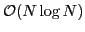
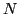

In several inverse problems that arise from geophysical applications,
such as identifying the contaminant source from time history of spatially
distributed contaminant measurements, the prevalent approach is to use
the Geostatistical approach with Gaussian priors. There are two main
computational bottlenecks in the large-scale implementation of this
approach: (1) covariance matrices that arise from finely spaced
discretizations on irregular grids, can be extremely large and moreover,
dense. (2) for certain problems with a large number of measurements, the
measurement operator is not only dense, forming it explicitly would
require the repeated solution of (possibly) time-dependent partial
differential equations. In this talk we propose to show, how to deal with
each one of these issues.
The covariance matrices that arise in practice, are extremely large and dense and this usually places a heavy burden both in terms of storage and computational requirements. Covariance kernels which are stationary and translation invariant, discretized on a uniformly spaced, regular grid, result in Toeplitz (or Block-Toeplitz) matrices. Toeplitz matrices can be embedded inside circulant matrices, for which operations such as matrix-vector products, matrix-matrix products can be efficiently computed using Fast Fourier Transforms (FFT). However, their primary deficiency is that these algorithms don't extend very easily to other types of grids that are predominant in realistic problems. Covariance matrices, although dense, have special structure which can be exploited. They are similar to dense matrices that arise from the discretization of integral equations. Using the Hierarchical matrix approach, we will show how to reduce the storage and computational complexity of matrix-vector products to

, where
is the number of unknowns that we are solving for.Then, using Bayes' rule, we can write down the posterior probability distribution of the unknowns, given the measurements, and assuming a Gaussian prior for the unknowns. The maximum a posteriori (MAP) estimate can be computed by solving the system of equations. We propose to use a matrix-free Krylov subspace approach to solve the resulting system of equations. This approach has a huge computation advantage because it avoids the explicit construction of the matrix and only relies on matrix-vector products, which can be accelerated using the Hierarchical matrix approach. We also propose a preconditioner that serves to cluster the eigenvalues and therefore reduce the number of iterations taken by the iterative solver. We will also provide numerical evidence for the clustering of the eigenvalues. Another important aspect of the Geostatistical approach is that, it not only allows us to obtain the best estimate via maximizing the likelihood, we can also quantify the uncertainty associated with our estimate. This can be done by generating conditional realizations from our posterior probability distribution of the unknowns. We show how to do this efficiently by using Chebyshev matrix polynomial approximation for the square root of the covariance matrix, to compute unconditional realizations and using these unconditional realizations to generate conditional realizations by solving a modification of the system of equations used to compute the MAP estimate. Finally, we demonstrate the performance of our algorithm on a large-scale inverse model problem on unstructured grids from contaminant source identification.